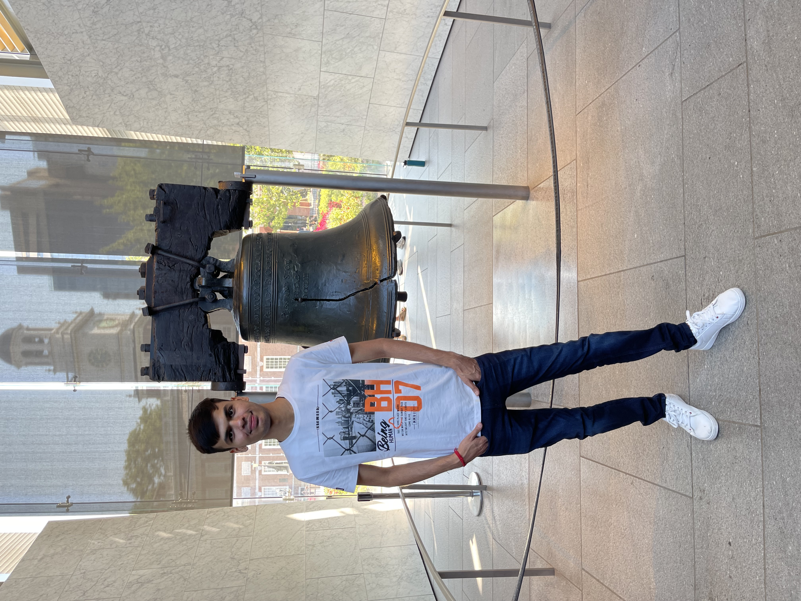

Tejas Milind Nagmoti
Purpose statement:
I strive to bridge the gap between technology and human behavior, empowering individuals to effortlessly navigate and derive value from digital products, ultimately shaping the future of user-centered design.
Professional philosophy statement:
I am a highly skilled professional with a strong background in Human-Computer Interaction and User Experience. With a passion for creating seamless and intuitive digital experiences, I strive to bridge the gap between users and technology. Equipped with a solid foundation in design principles and a keen understanding of user-centered methodologies, I am dedicated to crafting engaging interfaces that enhance user satisfaction and drive business success.